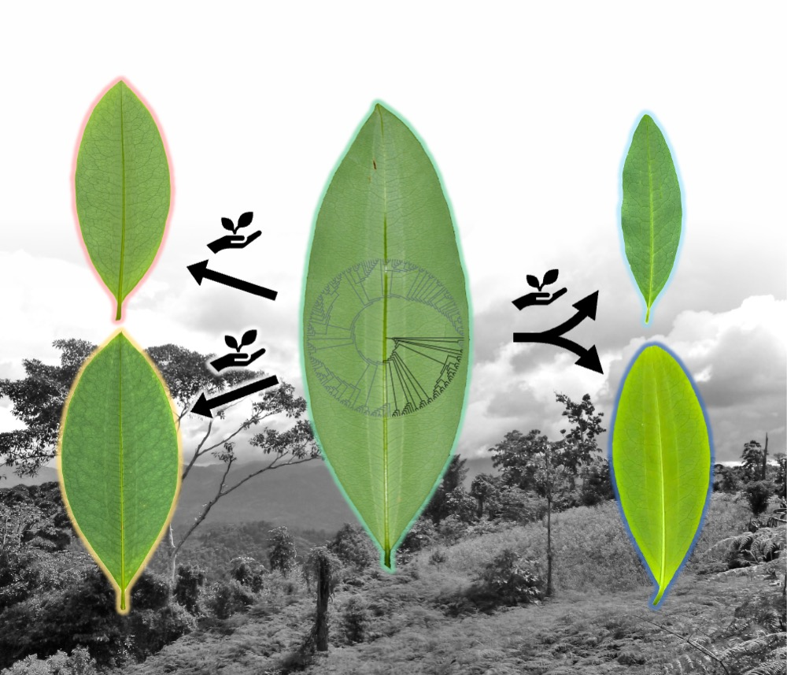
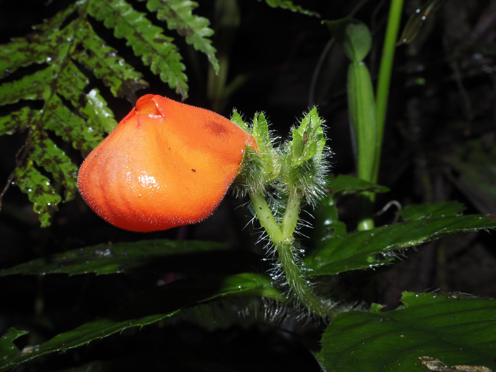
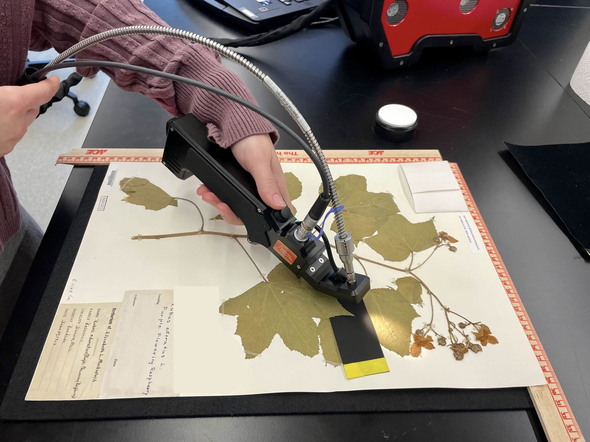

Collections-based botany in a changing world
We study plant diversity and diversification across scales, emphasizing field and herbarium collections, phylogenomics, and spectral phenomics to advance botanical knowledge and address ecological and societal challenges.
Based at Texas A&M University and the S.M. Tracy Herbarium, our work centers on building and stewarding botanical collections as critical research infrastructure for discovery, training, and biodiversity science.

Field, herbarium, genomic, and morphological approaches to species limits, domestication, biogeography, and diversification.

Inventories, taxonomy, conservation assessments, community partnerships, and conservation of threatened plants and places.

Specimen-linked spectral, genomic, geographic, and trait datasets for the next generation of high-throughput, collections-based biodiversity science.